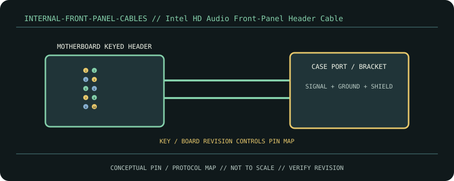

[ CABLE / ADAPTER RECORD // INTEL FRONT PANEL I/O HD AUDIO HEADER ]
Intel HD Audio Front-Panel Header Cable
Keyed 2×5 board header to case headphone/mic jacks; analog audio, ground, presence detect and jack-sense signals.

CLASSIFICATION: Internal front-panel cables. Identify protocol, direction, pinout and exact cable revision before connection.
Interface and capability
| Standard / protocol | Intel Front Panel I/O HD Audio header. Connector appearance alone does not establish compatibility. |
|---|---|
| Endpoint / pinout | Keyed 2×5 board header to case headphone/mic jacks; analog audio, ground, presence detect and jack-sense signals. |
| Capability / limits | Analog signal; no digital rate. Case lead and extensions have chassis-specific length/shielding. |
| Certification / length | Standards define interface requirements, not every assembly’s performance. Certification, mode, current/power rating, direction and maximum length belong to the exact product/revision and complete channel; verify its manufacturer specification. Do not infer certification from connector shape or marketing terminology. |
Compatibility & handling
- Use HD_AUDIO header rather than AC’97 where supported. Align key and consult board manual; do not force plug.
- Inspect connector keying, latch, contact condition, shielding, jacket and model/revision marking. Stop if contacts are bent, loose, scorched, corroded or mismatched.
- Route without tension or sharp bends; follow product bend-radius, strain-relief, current and environmental limits. Test at the intended protocol and mode—physical fit is not a compatibility test.
Sources & further reading
- Intel Front Panel I/O Connectivity Design GuidePrimary standards-body or manufacturer reference for Intel Front Panel I/O HD Audio header; confirm exact cable assembly, certification and revision.